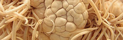
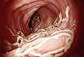
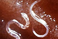

Szemek:
demodekózis, myiasis (légynyüvesség), onchocerciasis (folyami
vakság), telasiosis, cysticercosis (a központi idegrendszer borsóka fertőzése)

Agy:
alveococcosis, cysticercosis (a központi idegrendszer borsóka
fertőzése), echinococcosis, toxoplazmózis, elsődleges amebikus meningoencephalitis.

Bőr:
rüh, patkány kullancs által terjedő dermatitis, pediculosis,
pulicosis, sarcopsillosis, thrombidiasis, phthiriasis (tetükór), hemipterosis.

Szív:
dirofilariasis (fonalféreg-fertőzés), echinococcosis.

Emésztőrendszer és máj:
ankylostomiasis (horogféreg a bélben), ascariasis
(orsóféreg), bél myiasis, linguatulidosis, metagonimiasis, scarabiasis, strongyloidosis, vagyis
strongyloida fertőzés, trichinosis (borsóka fertőzés), trichostrongyloidosis, trichocephalosis
ostorféreg, enterobiasis, alveococcosis, clonorchiasis, opisthorchiasis, fasciolinococcosis

Húgyhólyag, nemi szervek:
urogenital myiasis, alveococcosis, echinococcosis.